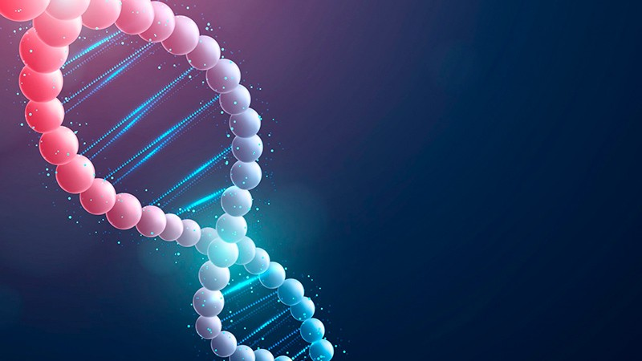

ДНК — это молекула, которая содержит наш генетический код и определяет нашу фенотипическую характеристику. В России проводятся многочисленные исследования, направленные на изучение новых механизмов работы ДНК, которые могут привести к значительным прорывам в области медицины и биотехнологии.
Одним из интересных направлений исследований в России является изучение эпигенетических механизмов, которые определяют, как гены выражаются в клетке. Эпигенетические изменения могут происходить в течение нашей жизни из-за разных факторов, таких как окружающая среда и питание. Исследования в этой области могут привести к новым методам лечения заболеваний, включая рак.
Другим интересным направлением исследований в России является изучение механизмов ДНК-репликации. Репликация — это копирование ДНК перед делением клетки. Изучение механизмов репликации может привести к новым методам лечения заболеваний, связанных с нарушением этого процесса, например, с синдромом Дауна.
Кроме того, в России проводятся исследования, направленные на изучение механизмов работы генов, которые связаны с различными заболеваниями, такими как болезнь Альцгеймера и болезнь Паркинсона. Изучение этих механизмов может привести к разработке методов диагностики и лечения этих заболеваний.
В России также проводятся исследования, связанные с использованием ДНК в биотехнологии. Например, исследователи ищут способы использования ДНК для производства лекарств и других важных биологических молекул.
